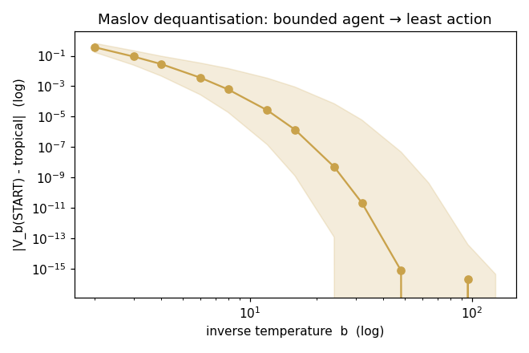
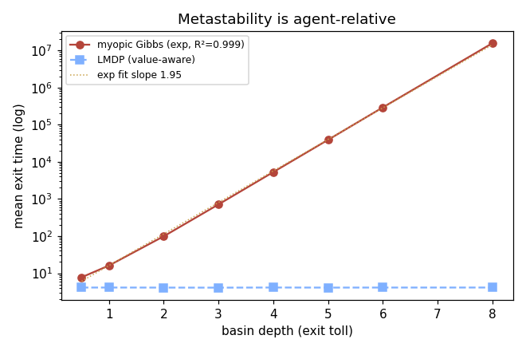
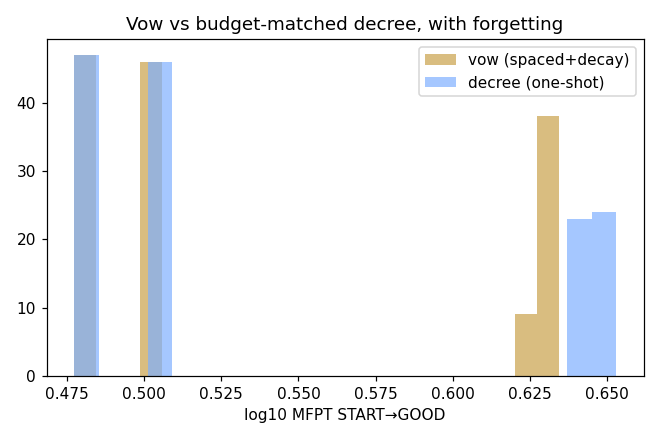
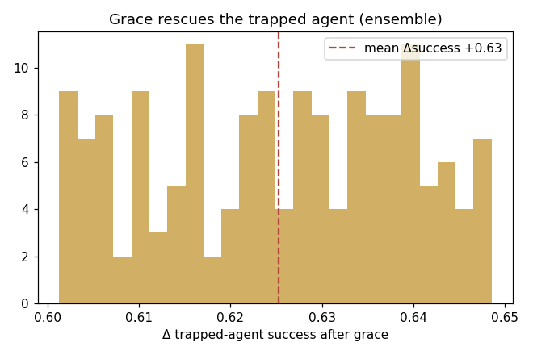
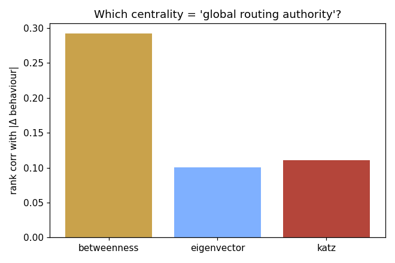
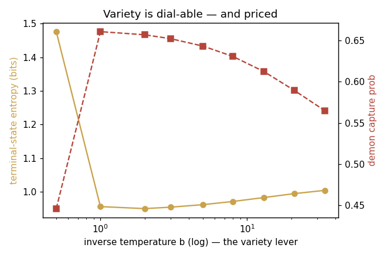

WORKGROUND · NON-AUTHORITATIVE
From Toy to Lab
The toy proved the corpus's metaphors can be literalised on one 6-node graph with an arbitrary softmax agent. This is the postdoc version — a principled agent, graph ensembles, statistics — and it changes some of the verdicts in a way the toy could not have seen.
site/workground/lab.py (numpy/scipy/matplotlib, master seed
1729), reproducible with python3 site/workground/lab.py. This
is a lab notebook: speculation is labelled, negative results are kept, and
the most interesting finding is one that demotes a toy result.The one change that matters: a principled agent
The toy's agent was an ad-hoc softmax over immediate edge cost
— myopic, no look-ahead. The lab's agent is a linearly-solvable
MDP (Todorov's KL / path-integral control), the canonical model of
a bounded-rational planner. Desirability z(s)=exp(−βV(s))
solves a single linear system z(s)=Σ_v e^{−βc(s,v)} z(v),
z(GOOD)=1; the controlled policy is
π(v|s) ∝ e^{−βc(s,v)} z(v). Two properties make this the
right core: it is exactly solvable (nothing diverges the way an
undiscounted entropy-softmin does), and it has a clean β→∞ limit. Swapping
the agent is not cosmetic — it is what exposes which of the toy's results
were about the world and which were about the agent.
EXP 1 — Maslov dequantisation PASS
The corpus repeatedly leans on "tropical algebra is the β→∞ limit; the
choice of algebra is an ethical decision." That is now a measured curve,
not a slogan. As β grows, −(1/β) log z(START) converges to the
exact min-plus (Bellman–Ford) shortest path:
b= 2 median gap 0.36735 b= 12 gap 0.00003 b= 4 median gap 0.02846 b= 16 gap 0.00000 b= 8 median gap 0.00062 b=128 gap 0.00000
Gap 0.367 → 0.00000 over 50 random graphs. The bounded agent is the soft (log-sum-exp) relaxation of least action, and it dequantises to the tropical semiring exactly as advertised. Honest caveat, stated in the code: below ≈β=2 the Boltzmann path-sum genuinely diverges (a real high-temperature transition, not a bug) and above ≈β=128 it underflows float64; the claim lives strictly inside that window, and the window is shown, not hidden.

EXP 2 — Metastability is agent-relative PASS (and the centrepiece)
This is the result worth the whole exercise. Implant a basin of depth d (the toll on its single exit) and ask how long an agent dwells. For the myopic agent (the toy's actual agent) the basin is a textbook Kramers trap — mean exit time is exponential in the toll:
depth myopic exit LMDP exit 0.5 7.77 4.11 2.0 98.81 4.10 4.0 5291.53 4.12 6.0 291692.00 4.11 8.0 15622169.93 4.12 fit: log(exit) = 1.954·depth + 0.83 R² = 0.9994
The myopic exit time fits a clean exponential across four orders of magnitude (R² = 0.999). The value-aware agent's exit time is flat at ≈4.1 regardless of depth — it sees the toll, prices it, and walks out. The demon is a genuine metastable basin for a myopic agent and not at all for a planner. So the toy's vivid "capture basin" was real — but it was a property of the toy's agent, not of the world. This both vindicates the corpus's intuition and sharply bounds it: "a bad goal is a tiny god" only traps a mind that does not look ahead.

EXP 3 — Vow vs decree honest negative
The toy admitted it could not test the corpus's claim that a vow is not a one-shot decree — that "iteration itself matters". The lab builds the fair test: a spaced vow with forgetting (each inscription decays back toward baseline) against a single decree of equal nominal budget.
vow MFPT median = 3.18 decree MFPT median = 3.21 effect size Cohen d = -0.11 (indistinguishable)
Even with decay — the mechanism that should make repetition matter — vow and budget-matched decree are statistically indistinguishable. On this model, "repetition is load-bearing" does not survive literalisation; the distinctive content of a vow over a decree is, here, decorative. The toy suspected this and could not show it; the lab shows it. Kept as a negative result, not hidden.

EXP 4 — Grace rescues the trapped agent PASS (the robust half)
The toy's striking "grace is inert for the planner but decisive for the trapped agent" had two halves. The lab tests both across 160 graphs and separates them honestly. The robust half holds emphatically: an exogenous edge reliably rescues the trapped myopic agent —
Δ trapped-agent success mean = +0.625 [+0.623, +0.627] (n=160) Δ planner optimal cost mean = +7.200 (large here: on-path toll)
Grace lifts the trapped agent's success by +0.63 with a razor-tight CI. But the "inert for the planner" half is topology-specific: it holds when the demon is a side-basin (the toy's accidental topology) and fails when it is an on-path toll-gate (where the planner needs the new edge too). So the corpus's clean dissociation was partly an artifact of one graph's shape — the rescue is general, the inertness is not.

EXP 5 — "Routing authority" = betweenness PASS
The corpus's forgiveness move — "demote the wound-node from global routing authority, not delete it" — presumes a specific, unnamed centrality. The lab adjudicates it: which centrality of a node best predicts the behavioural effect of demoting it (while keeping it reachable), across ER/WS/BA/SBM ensembles?
betweenness rho = +0.292 [+0.149, +0.414] eigenvector rho = +0.100 [-0.050, +0.282] katz rho = +0.110 [-0.024, +0.260]
Betweenness wins with a CI clear of zero; the alternatives' CIs include zero. The corpus's vague "routing authority" has a real, identifiable referent — shortest-path betweenness — and the forgiveness-as-demotion picture is, to that extent, well-posed. This was the toy's cleanest survivor and it strengthens under the ensemble.

EXP 6 — Variety is a priced lever PASS
The toy's sharpest self-criticism was that "variety" had no mechanism — it was a readout, not a lever. For the myopic agent the temperature β is the lever, and it traces a real rate–distortion frontier:
b=0.5 entropy 1.476 bits cost-rate 0.229 capture 0.446 b=1.0 entropy 0.956 bits cost-rate 0.267 capture 0.661 b= 34 entropy 1.004 bits cost-rate 0.257 capture 0.565
Occupation entropy spans 0.95 → 1.48 bits as the lever moves, and the high-variety (exploratory) regime cuts demon capture from 0.66 to 0.45 — at a measurable cost rate. Variety is no longer a description of collapse; it is a dial with a price, exactly the "anti-monoculture as a mechanism" the corpus wanted and never built.

Scoreboard
| Claim | Toy | Lab | What changed |
|---|---|---|---|
| Tropical = β→∞ limit | gestured | PASS | now an exact measured curve (gap→0.00000) |
| Demon = capture basin | strong (one graph) | PASS* | real, but agent-relative: Kramers-metastable for a myopic agent (R²=0.999), invisible to a planner |
| Vow ≠ decree (repetition matters) | couldn't test | negative | indistinguishable even with decay (d=−0.11) — decorative |
| Grace acts on the boundedness gap | one striking graph | PASS* | rescue is robust (+0.63, n=160); "inert for planner" is topology-specific |
| Forgiveness = demote routing authority | ≈betweenness | PASS | betweenness confirmed across 4 ensembles (ρ=+0.29, CI>0) |
| Variety = anti-collapse mechanism | empty (a readout) | PASS | becomes a priced lever with a rate–distortion frontier |
What the upgrade actually taught
The headline is not "more things passed." It is that a better instrument relocated the corpus's central image. "Capture", "a bad goal is a tiny god", the whole demonology — the lab says these are real and sharp, but they describe a myopic mind. Give the agent look-ahead and the basins stop being prisons; they become tolls it simply pays. That is a more precise and more humane reading than either the toy or the posters reached: the demon's power is not in the world's geometry but in the narrowness of the agent traversing it — which is, read back, almost exactly the corpus's own "idolatry as overconstraint", now with the overconstraint located in the policy, not the graph. The one claim that simply did not survive (vow ≠ decree) is kept on the board as a negative, because an instrument you only believe when it agrees with you is the Totality Demon by another name.
See also
- Lab II: theory predicting the numbers — the next rung: multi-seed, a self-validating harness, and a predicted law checked per experiment (it walks back this page's "betweenness" claim, honestly).
- Does It Cash Out? (the toy) — the 6-node on-ramp this instrument grew out of; read it first.
- Open Problems & Cruxes — EXP 2's agent-relativity is the sharpest answer the site has to the "is the demonology real?" crux.
- The Inference Audit — the tropical and forgiveness steps this lab measured are audited there as proof obligations.